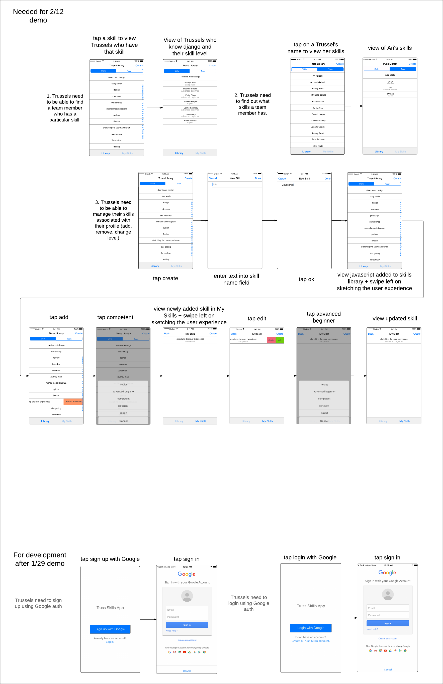

Individuals at the growing dev and design consultancy had very little prior knowledge of each other's skills and experiences, creating a barrier to collaboration across the organization.
stakeholder interviews To get a fuller view of stakeholder goals for the organization, I interviewed leadership, administrative staff, senior and junior developers at the consultancy.

personas:I created personas to clarify and communicate the goals and patterns for each stakeholder group.

storyboards: I also extracted two scenarios from the stakeholder interviews that were based on organizational priorities for the skills management tool.

Team empathy-building workshop: We split into two teams and performed one of the scenarios for the other group. Using the personas, each performer took on a different role from their own to increase empathy around the skill sharing problem. From this point, we were able to create a task analysis and user flow from which to begin the design process.
Using the collaboratively made user flows, I used standard iOS elements to create an MVP - iterating towards the most simple product possible for the initial build with junior engineers.
user flows:The user flows were created from a set of personas and scenarios that were based upon challenges the team was experiencing. Using these, each team member created their own task analysis and presented it to the group. We created a single set of user flows with stickies on the whiteboard.
site map: We combined the user flows into a site map to get a sense of the overall architecture of the product.
thumbnail flows with callouts: I created a visual guide to communicate the details of the design to stakeholders before engineers began the first build.
Prototype: I used Proto.io to build out the functionality of the user flows and nagivational structure of the site map into an interactive prototype.
Various team members provided feedback using the prototype of the design throughout the design process as they were the users.